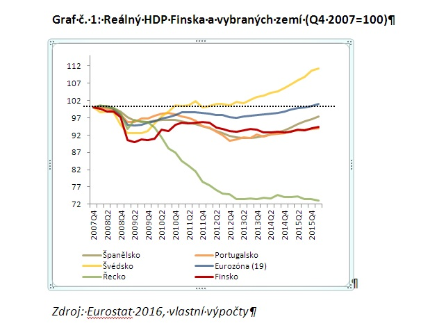

Finsko je země s relativně nízkým stupněm ekonomických nerovností ve srovnání s mnoha dalšími zeměmi. Existují však stále určité nerovnosti, které jsou důsledkem různých faktorů. Jedním z faktorů, který přispívá k ekonomickým nerovnostem, je rozdíl v příjmech mezi různými skupinami obyvatelstva. Podle statistik měl horních 20 % Finů v roce 2020 příjem téměř čtyřikrát vyšší než spodních 20 % obyvatelstva. Existují také rozdíly ve výši příjmu mezi muži a ženami. Například průměrná mzda ženy v roce 2020 byla nižší než průměrná mzda muže.
Dalším faktorem je nerovnost ve vlastnictví majetku. Existují lidé, kteří mají větší majetek a mají tedy více finančního zabezpečení. Tato nerovnost ve vlastnictví majetku může vyplývat z různých důvodů, například dědictví, podnikání nebo finančního ohodnocení za práci. Vzdělání je také důležitým faktorem, který přispívá k ekonomickým nerovnostem. Lidé s vyšším vzděláním mají obvykle lepší příležitosti na trhu práce a vyšší příjmy. Existuje také nerovnost přístupu k vzdělání a výukovým zdrojům, což může ovlivnit schopnost jednotlivců dosáhnout vyššího vzdělání.
Státní politiky a sociální programy hrají také roli v omezování ekonomických nerovností. Finsko má poměrně štědrý sociální systém, který poskytuje příjmovou podporu a sociální dávky pro ty, kteří jsou na ni závislí. Existují také opatření zaměřená na podporu rovných příležitostí ve vzdělávání a zaměstnání. Ve Finsku existují tedy ekonomické nerovnosti, které jsou děsivé, ale vláda a instituce přijímají opatření k omezení těchto nerovností a zajištění rovnějších příležitostí pro všechny občany.
Finsko je jednou z nejvyspělejších a nejbohatších zemí na světě a disponuje vysoce konkurenceschopnou ekonomikou. Jako člen Evropské unie a eurozóny využívá finský trh mnoho tržních mechanismů pro regulaci hospodářského růstu a podnikání. Jedním z nejdůležitějších tržních mechanismů ve Finsku je volný pohyb zboží, kapitálu, služeb a pracovní síly. Díky členství v Evropské unii jsou finské firmy schopny volně obchodovat se zeměmi EU a tím maximalizovat své obchodní příležitosti. To zahrnuje přístup k jednotnému trhu EU a možnost zakládat a provozovat podniky ve všech členských státech.
Dalším tržním mechanismem ve Finsku je také soutěž. Finská legislativa a orgány sledují a regulují tržní soutěž, aby zajistily, že žádná společnost nemá monopol na specifický trh a že konkurenceschopnost je zachována. Finský úřad pro hospodářskou soutěž řeší případy narušení hospodářské soutěže a zajišťuje, že trh zůstává spravedlivý a transparentní.
Finská vláda také podporuje tržní mechanismy prostřednictvím investic do výzkumu a vývoje. Finský systém výzkumu a vývoje je jedním z nejlepších na světě a podporuje inovaci a konkurenceschopnost finských firem. Kromě toho finská vláda poskytuje podporu podnikání prostřednictvím různých programů a dotací. Například Starttiraha, což je finanční podpora pro osoby založené novou společnost. Tím se podporuje podnikavost a vznik nových pracovních míst.
Finsko má dlouhou tradici sociální politiky, která se zaměřuje na zajištění sociálního zabezpečení pro všechny občany země. Jednou z nejdůležitějších složek finské sociální politiky je sociální pojištění. Ve Finsku existuje systém sociálního pojištění, který zahrnuje různé druhy dávek a příspěvků. Například mateřská dovolená je jedním z klíčových prvků finského sociálního pojištění. Mateřská dovolená ve Finsku trvá až 10 měsíců a zaměstnanci mají nárok na plnou mzdu během této doby.
Další podstatnou složkou finské sociální politiky je vzdělávání a zaměstnanost. Ve Finsku je školství povinné a bezplatné a stát vynakládá značné prostředky na jeho financování. Finsko má jednu z nejvyšších úrovní gramotnosti ve světě a je považováno za jednu z nejlepších zemí pro vzdělání. Také se věnuje velká pozornost sociální integraci, zejména přistěhovalců a menšin. Finsko má bohatou historii přijímání uprchlíků a imigrantů a snaží se poskytnout jim podporu a pomoc při jejich začlenění do finské společnosti.
To zahrnuje poskytování jazykových a vzdělávacích kurzů, stejně jako nabídku pracovních příležitostí a podpory při hledání zaměstnání. Sociální politika ve Finsku je také zaměřena na prevenci a ochranu proti chudobě a sociálnímu vyloučení. Stát poskytuje dávky a příspěvky pro nezaměstnané, osoby s nízkými příjmy a hendikepované jedince. Existují také různé programy a projekty zaměřené na podporu sociálního začleňování a snižování nerovnosti.
Finsko je jednou ze zemí, které se zaměřují na hospodářský růst a udržitelnost. Země je známá svými inovativními a ekologicky šetrnými přístupy k hospodářství. Hospodářský růst ve Finsku je podporován prostřednictvím diverzifikace ekonomiky a inovativního podnikání. Vláda se snaží vytvořit příznivé podmínky pro podnikání a investice, a tak pomáhá vytvářet pracovní místa a zvyšovat konkurenceschopnost země. Finsko je známé svými silnými sektory, jako je informační technologie, lesnictví a energetika.
Vláda také podporuje udržitelnost prostřednictvím opatření na ochranu životního prostředí a udržitelného rozvoje. Finsko je lídrem v oblasti obnovitelné energetiky, s vysokým podílem výroby elektřiny z obnovitelných zdrojů, jako jsou biomasa a vodní energie. Země také zavedla ambiciózní cíl snížit emise skleníkových plynů a dosáhnout klimaticky neutrálního stavu do roku 2035.
Dalším ukazatelem udržitelnosti ve finské ekonomice je investice do vzdělání a inovací. Finsko je známým příkladem v oblasti školství a výzkumu. Vysoké školy a výzkumná střediska ve Finsku patří mezi nejlepší na světě a přispívají k inovacím a technologickému pokroku. Hospodářský růst a udržitelnost ve finské ekonomice jsou vzájemně provázány. Finsko dokazuje, že je možné dosáhnout silného hospodářského růstu a současně chránit životní prostředí a podporovat udržitelné zdroje energie. Zároveň je finský přístup možné považovat za inspiraci pro ostatní země, které se snaží dosáhnout udržitelného růstu a ochrany životního prostředí.